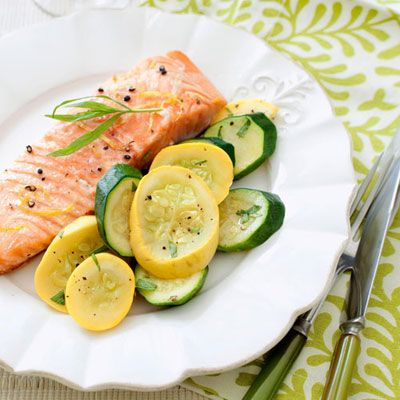

Grilled Salmon with Lemon and Dill
This dish is simple yet elegant and perfect for a special occasion. The salmon is seasoned with lemon, dill, salt, and pepper, then grilled to perfection. It is served with a side of roasted vegetables.

Ingredients
- 1 pound salmon fillet
- 1 tablespoon olive oil
- 1 lemon, thinly sliced
- 1 tablespoon dill, chopped
- Salt and pepper to taste
Cooking Instructions
- Preheat grill to medium-high heat.
- Brush salmon with olive oil and season with salt, pepper, lemon slices and dill.
- Grill salmon for 4-5 minutes per side or until cooked through.
- Serve with roasted vegetables.